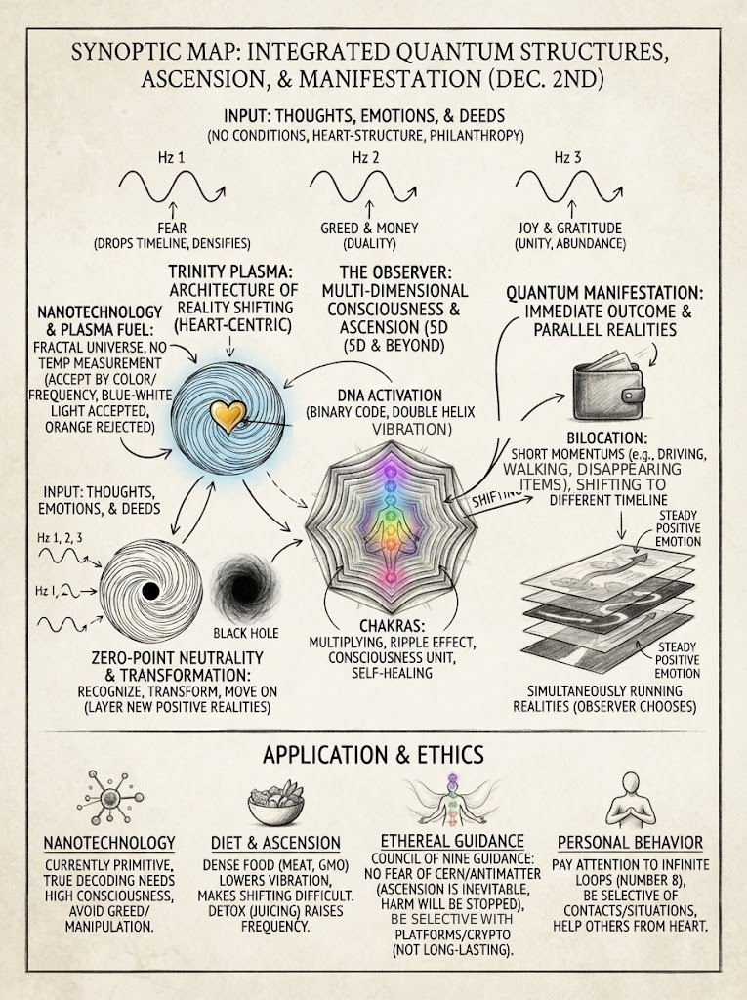
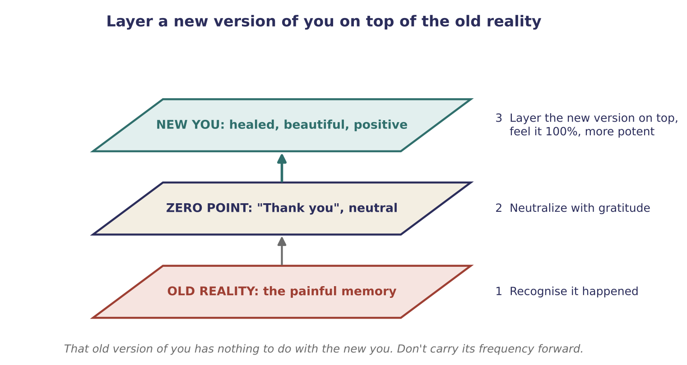

Q & A: Giving Without Money, Diet and Clearing the Past
Giving when money is short, bilocation, chakras, food and frequency, layering a new version of yourself, fear, and earning through your gifts (live Q&A)

Key teachings
9.1Giving when money is short
When you're short and fearful and say "I don't have", you project that into the field. It then offers probabilities that cap the money, because that is what your consciousness put in. Hold the positive instead: "I have everything I need." Money is part of the structure, a transition and a duality; nobody says don't have it.
Giving from the heart doesn't need money. If you have money at that moment, give some; if not, give a skill, such as editing or making something, or simply talk to someone so they feel better. Don't attach your help only to money, and don't make it conditional on being paid. Stay in joy moment to moment, so that you shift into positive outcomes. If your emotion keeps dropping, you flicker between two timelines and can't see the positive one (see 2.3, 3.1).
Study the talks, note the minute where something is explained, and rewatch it until it crystallizes; some rules have to be heard many times.
9.2Bilocation needs body and consciousness together
There is no magic "algorithm" for bilocation. It comes when your body and consciousness become one unit: the molecules of your body must vibrate at a higher rate, which is why detox and diet matter, and your consciousness must hold no conditions, which is why the heart frequency matters (see 5.5).
Bilocation means recalling the vibration of another reality and shifting your consciousness into it, at 100% belief. Small versions already happen: you can't remember walking from the living room to the garage, or an hour's drive felt like five minutes. Notice these moments so the possibility crystallizes in your consciousness.
9.3Nano, plasma and the people who work with them
On measuring a plasma field: don't go by temperature, which fluctuates and confuses. Let the nanoparticles choose each other by colour: blue-white light means they accept each other and form a third (1 + 1 = 3); orange means rejection (see 5.9). Give them a couple of days. Because the material is a life consciousness and mimics the people working with it, everyone involved should meditate first and work in joy.
Today's nanotechnology is described as primitive, a first step. Fuller knowledge comes when the right people are ready; greed and the hunt for fame can't exist in a fifth-dimensional structure, and those driven by them will find they can't continue. The technical books are said to be coded for the right people, and science and consciousness are one unit.
9.4Chakras multiplying
The chakras are described as multiplying: as higher frequencies arrive, they resonate like a ripple effect, glowing with changing colours towards purple, the highest frequency for your timeline at present. They are not fixed at seven or twelve; in the end, consciousness is pure knowing, with all chakras working as one unit. What activates this is living through the heart structure (see Section 5), which is also linked to activation in the DNA and to self-healing.
9.5Helping humanity, one meeting at a time
Don't focus too much on what you're projecting; let it flow from the heart. Practise switching your emotion to the positive (see 7.1). Every day, engage with material that uplifts you, do things that bring you joy, help a neighbour, and find gratitude even for small things; that joy is the frequency of positive manifestation.
People you resonate with will appear, for example someone who starts talking about the very thing you've been studying. In that moment that person and you are the whole hologram, so give it 100%, from the heart. You met because you resonate. Add a condition, greed or money, and what comes to you starts to mirror that.
9.6Clearing the past: layer a new version of you
If a past experience still hurts, you carry its "memory code" into each new reality, and years later you are still building a timeline on it. Use the platform from Section 7, in its recognise, transform, move on form:
Recognise that it happened. Neutralize it with thanks, at zero point (see 2.1): no input and no output, just acknowledgement. Then transform: imagine yourself completely healed and beautiful now, and layer that new hologram on top of the old one. Feel it at 100%, so the new layer is more potent. That old version of you has nothing to do with the new you; there's no need to carry its frequency forward (see 6.6).
Losing yourself in a memory creates a loop, the same energy over and over, which hides the fact that you can get out. The way out is from within: recognise the feeling is dense, lift it to the positive, and lay that over it. Each now is a new hologram that has nothing to do with two seconds ago (see 2.7).

9.7Food, frequency and choice
Everyone can reach a fifth-dimensional reality in consciousness. But to hold very high frequencies for a long time, for example in contact, the body needs to resonate too, and dense food, smoking and drugs keep it at a lower vibration. This is not punishment; it's resonance. You can't see what you don't match, like something vibrating at 5 that you can't perceive while you're at 3.
The body sends signals: illness can be your timeline saying "change now". The suggestion is lighter, cleaner food, such as fresh juices and proper meals, rather than heavily processed food and a lot of meat. You don't have to be perfect; even the teacher admits slipping. During ascension everyone is given chances to heal, and there is time to change, unless the body has been damaged past repair. It is your choice.
A note of balance, in line with the advice to check your body (3.7): before a detox, juice fast or big change in diet, especially with a health condition or regular medication, talk to a doctor, and never stop prescribed medicine on your own.
9.8Why some negative people still have money
Money can be manifested through duality, a different platform, so a cruel person can still be financially successful. But consciousness is moving toward unity through the heart, and humanity is transitioning from money to abundance; as long as there is duality, everything comes with conditions. Don't measure it from the monetary view, and don't worry about how much you lack: worrying stops the process. Take whatever work you need and keep going, and let the field open other routes (see Section 4).
9.9Fear, density and frightening news
"Negative" isn't really the word; energy is just energy. Dense energy is conditioned, like swimming through water; light energy is like flying. Sometimes a little density is even needed to mould something. When you see someone stuck in fear or heaviness, do something from the heart to lift them; you collect positive frequency too.
On fearful news, such as a powerful experiment or someone's harmful plan: be aware without fear, and let them be in their reality. Know that ascension is the end result and that harmful plans will be stopped, in infinite ways (see 7.5). Don't believe something will destroy humanity; create the timeline where it no longer exists, and leave the how to the field. A caution was also given about cryptocurrency platforms: be very selective.
9.10Knowing you're on track: the people around you
You are always ascending; consciousness never stops evolving. As your frequency rises, you'll be shown who around you no longer matches: people you've known for years may suddenly act in ways that surprise you. That is the difference in vibration becoming visible. Act through the heart, watch how people respond, and choose your circle accordingly. That choice is yours.
Fifth-dimensional reality isn't one flat level. It has infinite layers and timelines, so even there you keep fluctuating and learning (see 6.3).
9.11Earning through your gifts
If you make your living from spiritual gifts, the guidance is the same platform (see 4.4): pay your bills, then help freely through the heart. Treating the gift purely as a business crystallizes a money-only timeline, where the only way to receive is to be paid, when the field could bring what you need through countless routes, like the couch someone offers you. Integrate it gradually; you aren't expected to jump in all at once. Signs matter here too: the number 8 is an infinite loop, so when you keep seeing it, notice what you're doing and saying at that moment (see 8.9).
The method — Layer a New You
For an old hurt or memory that keeps coming back:
- Recognise it. "This happened, and I'm still carrying it."
- Neutralize. "Thank you for showing me." Zero point: no input, no output.
- Separate. "That was another reality. That version of me isn't me now."
- Imagine the new you: healed, beautiful, at peace, here now.
- Layer it on top and feel it at 100%, so it is more potent than the old one.
- Move on. Leave it alone; if the loop returns, lift it again.
- Give something from the heart today, whatever you have, so you collect positive frequency.